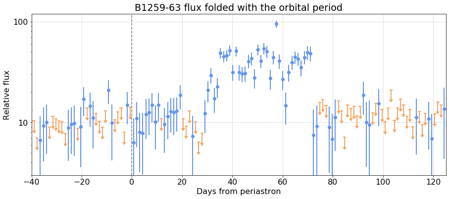

---

title: B1259-63 folded analysis

keywords: fastai
sidebar: home_sidebar

summary: "Rebin with time bins aligned with orbit"
description: "Rebin with time bins aligned with orbit"
nb_path: "nbs/B1259_phased.ipynb"
---
<!--

#################################################
### THIS FILE WAS AUTOGENERATED! DO NOT EDIT! ###
#################################################
# file to edit: nbs/B1259_phased.ipynb
# command to build the docs after a change: nbdev_build_docs

-->

<div class="container" id="notebook-container">
        
    {% raw %}
    
<div class="cell border-box-sizing code_cell rendered">

</div>
    {% endraw %}

    {% raw %}
    
<div class="cell border-box-sizing code_cell rendered">

<div class="output_wrapper">
<div class="output">

<div class="output_area">

<div class="output_subarea output_stream output_stdout output_text">
<pre>Tue Apr 27 15:24:06 PDT 2021
</pre>
</div>
</div>

</div>
</div>

</div>
    {% endraw %}

    {% raw %}
    
<div class="cell border-box-sizing code_cell rendered">
<details class="description">
      <summary data-open="Hide Code" data-close="Show Code"></summary>
        <summary></summary>
        <div class="input">

<div class="inner_cell">
    <div class="input_area">
<div class=" highlight hl-ipython3"><pre><span></span><span class="kn">from</span> <span class="nn">wtlike.config</span> <span class="kn">import</span> <span class="o">*</span>
<span class="kn">from</span> <span class="nn">wtlike.cell_data</span> <span class="kn">import</span> <span class="o">*</span>
<span class="kn">from</span> <span class="nn">wtlike.bayesian</span> <span class="kn">import</span> <span class="o">*</span>
<span class="kn">from</span> <span class="nn">wtlike.lightcurve</span> <span class="kn">import</span> <span class="o">*</span>
<span class="kn">from</span> <span class="nn">light_curves.b1259</span> <span class="kn">import</span> <span class="o">*</span>
<span class="kn">from</span> <span class="nn">utilities.ipynb_docgen</span> <span class="kn">import</span> <span class="o">*</span>

<span class="n">config</span> <span class="o">=</span> <span class="n">Config</span><span class="p">(</span><span class="n">data_folder</span><span class="o">=</span><span class="s1">&#39;/home/burnett/weekly&#39;</span><span class="p">,</span> <span class="n">verbose</span><span class="o">=</span><span class="mi">1</span><span class="p">)</span>

<span class="k">class</span> <span class="nc">B1259phased</span><span class="p">(</span><span class="n">B1259Periastron</span><span class="p">):</span>
    
    <span class="k">def</span> <span class="fm">__init__</span><span class="p">(</span><span class="bp">self</span><span class="p">,</span> <span class="n">config</span><span class="p">,</span> <span class="n">first</span><span class="o">=</span><span class="mi">54683</span><span class="p">,</span> <span class="n">last</span><span class="o">=</span><span class="mi">59326</span><span class="p">,</span> <span class="n">nbins</span><span class="o">=</span><span class="mi">1000</span><span class="p">,</span> <span class="n">clear</span><span class="o">=</span><span class="kc">False</span><span class="p">):</span>
        
        <span class="c1"># construct bins with respect to phase</span>
        <span class="bp">self</span><span class="o">.</span><span class="n">interval</span> <span class="o">=</span> <span class="n">interval</span><span class="o">=</span><span class="n">nbins</span><span class="o">/</span><span class="bp">self</span><span class="o">.</span><span class="n">period</span>
        <span class="bp">self</span><span class="o">.</span><span class="n">nbins</span> <span class="o">=</span> <span class="n">nbins</span>
        <span class="k">def</span> <span class="nf">mjd2phase_bin</span><span class="p">(</span><span class="n">mjd</span><span class="p">):</span>
            <span class="k">return</span> <span class="p">(</span><span class="n">mjd</span><span class="o">-</span><span class="bp">self</span><span class="o">.</span><span class="n">tp</span><span class="o">+</span><span class="bp">self</span><span class="o">.</span><span class="n">period</span><span class="p">)</span><span class="o">*</span><span class="n">interval</span>
        <span class="k">def</span> <span class="nf">phase_bin2mjd</span><span class="p">(</span><span class="n">pb</span><span class="p">):</span>
            <span class="k">return</span> <span class="n">pb</span><span class="o">/</span><span class="n">interval</span><span class="o">+</span><span class="bp">self</span><span class="o">.</span><span class="n">tp</span><span class="o">-</span><span class="bp">self</span><span class="o">.</span><span class="n">period</span>
        <span class="n">first_edge</span> <span class="o">=</span> <span class="nb">int</span><span class="p">(</span><span class="n">mjd2phase_bin</span><span class="p">(</span><span class="n">first</span><span class="p">))</span><span class="o">+</span><span class="mi">1</span>
        <span class="n">last_edge</span> <span class="o">=</span> <span class="nb">int</span><span class="p">(</span><span class="n">mjd2phase_bin</span><span class="p">(</span><span class="n">last</span><span class="p">))</span>
        <span class="n">N</span> <span class="o">=</span> <span class="n">last_edge</span><span class="o">-</span><span class="n">first_edge</span>
        <span class="n">phasebins</span> <span class="o">=</span> <span class="n">np</span><span class="o">.</span><span class="n">array</span><span class="p">(</span><span class="nb">list</span><span class="p">(</span><span class="nb">map</span><span class="p">(</span><span class="n">phase_bin2mjd</span><span class="p">,</span> <span class="n">np</span><span class="o">.</span><span class="n">linspace</span><span class="p">(</span><span class="n">first_edge</span><span class="p">,</span> <span class="n">last_edge</span><span class="p">,</span> <span class="n">N</span><span class="o">+</span><span class="mi">1</span><span class="p">)</span> <span class="p">))</span> <span class="p">)</span>  
        
        <span class="nb">super</span><span class="p">()</span><span class="o">.</span><span class="fm">__init__</span><span class="p">(</span><span class="n">config</span><span class="p">,</span> <span class="n">bins</span><span class="o">=</span><span class="n">phasebins</span><span class="p">,</span> <span class="n">bin_key</span><span class="o">=</span><span class="s1">&#39;B1259_phase_bin_edges&#39;</span><span class="p">,</span> <span class="n">clear</span><span class="o">=</span><span class="n">clear</span><span class="p">)</span>
        
    <span class="k">def</span> <span class="nf">mjd2phase</span><span class="p">(</span><span class="bp">self</span><span class="p">,</span> <span class="n">t</span><span class="p">):</span>
        <span class="sd">&quot;&quot;&quot;return the phase, [-0.5,0.5) for t in MJD &quot;&quot;&quot;</span>
        <span class="n">r</span> <span class="o">=</span> <span class="n">np</span><span class="o">.</span><span class="n">mod</span><span class="p">(</span><span class="n">t</span><span class="o">-</span><span class="bp">self</span><span class="o">.</span><span class="n">tp</span><span class="p">,</span> <span class="bp">self</span><span class="o">.</span><span class="n">period</span><span class="p">)</span><span class="o">/</span><span class="bp">self</span><span class="o">.</span><span class="n">period</span>
        <span class="k">if</span> <span class="n">r</span><span class="o">&gt;</span><span class="mf">0.5</span><span class="p">:</span> <span class="n">r</span><span class="o">-=</span><span class="mf">1.0</span>
        <span class="k">return</span> <span class="n">r</span>
    
    <span class="k">def</span> <span class="nf">combine_phases</span><span class="p">(</span><span class="bp">self</span><span class="p">):</span>
        <span class="sd">&quot;&quot;&quot; Fold, and fit cells to a lightcurve  with respect to phase  </span>
<span class="sd">        &quot;&quot;&quot;</span>
        <span class="n">cells</span> <span class="o">=</span> <span class="bp">self</span><span class="o">.</span><span class="n">cells</span>
        <span class="n">cell_width</span> <span class="o">=</span> <span class="n">cells</span><span class="o">.</span><span class="n">iloc</span><span class="p">[</span><span class="mi">0</span><span class="p">]</span><span class="o">.</span><span class="n">tw</span> 
        <span class="n">cells</span><span class="o">.</span><span class="n">loc</span><span class="p">[:,</span><span class="s1">&#39;phase&#39;</span><span class="p">]</span> <span class="o">=</span> <span class="n">cells</span><span class="o">.</span><span class="n">t</span><span class="o">.</span><span class="n">apply</span><span class="p">(</span><span class="k">lambda</span> <span class="n">t</span><span class="p">:</span> <span class="bp">self</span><span class="o">.</span><span class="n">mjd2phase</span><span class="p">(</span><span class="n">t</span><span class="p">)</span><span class="o">.</span><span class="n">round</span><span class="p">(</span><span class="mi">4</span><span class="p">))</span>

        <span class="c1"># check how many of  each phase</span>
        <span class="k">if</span> <span class="bp">self</span><span class="o">.</span><span class="n">config</span><span class="o">.</span><span class="n">verbose</span><span class="o">&gt;</span><span class="mi">0</span><span class="p">:</span>
            <span class="n">t</span><span class="p">,</span> <span class="n">c</span> <span class="o">=</span> <span class="n">np</span><span class="o">.</span><span class="n">unique</span><span class="p">(</span><span class="n">cells</span><span class="o">.</span><span class="n">phase</span><span class="p">,</span> <span class="n">return_counts</span><span class="o">=</span><span class="kc">True</span><span class="p">)</span>
            <span class="n">n</span><span class="p">,</span> <span class="n">c</span> <span class="o">=</span> <span class="n">np</span><span class="o">.</span><span class="n">unique</span><span class="p">(</span><span class="n">c</span><span class="p">,</span> <span class="n">return_counts</span><span class="o">=</span><span class="kc">True</span><span class="p">)</span>
            <span class="n">fdf</span> <span class="o">=</span> <span class="n">pd</span><span class="o">.</span><span class="n">DataFrame</span><span class="p">(</span><span class="nb">dict</span><span class="p">(</span><span class="n">cells</span><span class="o">=</span><span class="n">n</span><span class="p">,</span> <span class="n">count</span><span class="o">=</span><span class="n">c</span><span class="p">))</span>
            <span class="nb">print</span><span class="p">(</span><span class="sa">f</span><span class="s1">&#39;Combine to </span><span class="si">{</span><span class="nb">len</span><span class="p">(</span><span class="n">t</span><span class="p">)</span><span class="si">}</span><span class="s1"> phase cells: check number of cells </span><span class="se">\n</span><span class="s1"> </span><span class="si">{</span><span class="n">fdf</span><span class="si">}</span><span class="s1">&#39;</span><span class="p">)</span>

        <span class="c1"># group by phase</span>
        <span class="n">gcells</span> <span class="o">=</span> <span class="n">cells</span><span class="o">.</span><span class="n">groupby</span><span class="p">(</span><span class="s1">&#39;phase&#39;</span><span class="p">)</span>

        <span class="n">phased_cells</span> <span class="o">=</span> <span class="p">[]</span>
        <span class="k">for</span> <span class="n">phase</span><span class="p">,</span> <span class="n">gcell</span> <span class="ow">in</span> <span class="n">gcells</span><span class="p">:</span>
            <span class="n">newcell</span><span class="o">=</span><span class="nb">dict</span><span class="p">(</span><span class="n">t</span><span class="o">=</span><span class="n">phase</span><span class="o">*</span><span class="bp">self</span><span class="o">.</span><span class="n">period</span><span class="p">,</span> <span class="n">tw</span><span class="o">=</span><span class="n">cell_width</span><span class="p">)</span>
            <span class="k">for</span> <span class="n">col</span> <span class="ow">in</span> <span class="s1">&#39; n e S B&#39;</span><span class="o">.</span><span class="n">split</span><span class="p">():</span>
                <span class="n">newcell</span><span class="p">[</span><span class="n">col</span><span class="p">]</span> <span class="o">=</span> <span class="n">gcell</span><span class="p">[</span><span class="n">col</span><span class="p">]</span><span class="o">.</span><span class="n">sum</span><span class="p">()</span>
            <span class="n">newcell</span><span class="p">[</span><span class="s1">&#39;w&#39;</span><span class="p">]</span> <span class="o">=</span> <span class="n">np</span><span class="o">.</span><span class="n">concatenate</span><span class="p">(</span><span class="nb">list</span><span class="p">(</span><span class="n">gcell</span><span class="o">.</span><span class="n">w</span><span class="o">.</span><span class="n">values</span><span class="p">))</span>
            <span class="n">phased_cells</span><span class="o">.</span><span class="n">append</span><span class="p">(</span><span class="n">newcell</span><span class="p">)</span>
        <span class="bp">self</span><span class="o">.</span><span class="n">folded_cells</span> <span class="o">=</span> <span class="n">df</span> <span class="o">=</span> <span class="n">pd</span><span class="o">.</span><span class="n">DataFrame</span><span class="p">(</span><span class="n">phased_cells</span><span class="p">)</span>
        
        <span class="c1"># fold the phases, and make a folded lightCurve </span>
        
        <span class="bp">self</span><span class="o">.</span><span class="n">folded_lc</span> <span class="o">=</span> <span class="n">LightCurve</span><span class="p">(</span><span class="bp">self</span><span class="o">.</span><span class="n">config</span><span class="p">,</span> <span class="bp">self</span><span class="o">.</span><span class="n">folded_cells</span><span class="p">,</span> <span class="bp">self</span><span class="o">.</span><span class="n">source</span><span class="p">)</span>
        

    <span class="k">def</span> <span class="nf">do_folded_bb</span><span class="p">(</span><span class="bp">self</span><span class="p">):</span>
        <span class="sd">&quot;&quot;&quot;Perform Bayesian Block analysis on the folded</span>
<span class="sd">        &quot;&quot;&quot;</span>
        <span class="c1"># do the BB to get partition</span>
        <span class="bp">self</span><span class="o">.</span><span class="n">bb_folded_edges</span> <span class="o">=</span> <span class="n">get_bb_partition</span><span class="p">(</span><span class="bp">self</span><span class="o">.</span><span class="n">config</span><span class="p">,</span> <span class="bp">self</span><span class="o">.</span><span class="n">folded_lc</span><span class="p">)</span>

        <span class="c1"># combine the cells</span>
        <span class="bp">self</span><span class="o">.</span><span class="n">bb_folded_cells</span> <span class="o">=</span> <span class="n">partition_cells</span><span class="p">(</span><span class="bp">self</span><span class="o">.</span><span class="n">config</span><span class="p">,</span> <span class="bp">self</span><span class="o">.</span><span class="n">folded_cells</span><span class="p">,</span> <span class="bp">self</span><span class="o">.</span><span class="n">bb_folded_edges</span><span class="p">)</span>
        <span class="c1"># fit them</span>
        <span class="bp">self</span><span class="o">.</span><span class="n">bb_folded_lc</span> <span class="o">=</span> <span class="n">fit_cells</span><span class="p">(</span><span class="bp">self</span><span class="o">.</span><span class="n">config</span><span class="p">,</span> <span class="bp">self</span><span class="o">.</span><span class="n">bb_folded_cells</span><span class="p">,)</span> 
</pre></div>

    </div>
</div>
</div>

    </details>
</div>
    {% endraw %}

    {% raw %}
    
<div class="cell border-box-sizing code_cell rendered">
<details class="description">
      <summary data-open="Hide Code" data-close="Show Code"></summary>
        <summary></summary>
        <div class="input">

<div class="inner_cell">
    <div class="input_area">
<div class=" highlight hl-ipython3"><pre><span></span><span class="n">phase_bba</span><span class="o">=</span><span class="kc">None</span>

<span class="k">def</span> <span class="nf">B1259_phased</span><span class="p">():</span>
    <span class="sd">&quot;&quot;&quot;</span>
<span class="sd">    ## Run Bayesian Block analysis wwith phased bins</span>
<span class="sd">    </span>
<span class="sd">    Define {nbins} bins with {width:.2f}-day width.</span>
<span class="sd">    {printout1}</span>
<span class="sd">    </span>
<span class="sd">    ### The full light curve with BB overlay:</span>
<span class="sd">    {fig1}</span>
<span class="sd">    </span>
<span class="sd">    ### After folding:</span>
<span class="sd">    {fig2}</span>
<span class="sd">    </span>
<span class="sd">    ### Perform the Bayesian Block analysis on the folded light curve</span>
<span class="sd">    {printout2}</span>
<span class="sd">    </span>
<span class="sd">    Table of blocks, fits:</span>
<span class="sd">    {folded_bb_table}</span>
<span class="sd">    </span>
<span class="sd">    {fig4}</span>
<span class="sd">    &quot;&quot;&quot;</span>
    <span class="n">plt</span><span class="o">.</span><span class="n">rc</span><span class="p">(</span><span class="s1">&#39;font&#39;</span><span class="p">,</span> <span class="n">size</span><span class="o">=</span><span class="mi">16</span><span class="p">)</span>
    <span class="k">global</span> <span class="n">phase_bba</span>
    
    <span class="k">with</span> <span class="n">capture_print</span><span class="p">(</span><span class="s1">&#39;Output from phased bin analysis&#39;</span><span class="p">)</span> <span class="k">as</span> <span class="n">printout1</span><span class="p">:</span>
        <span class="n">phase_bba</span> <span class="o">=</span> <span class="n">B1259phased</span><span class="p">(</span><span class="n">config</span><span class="p">)</span>
        <span class="n">nbins</span><span class="p">,</span> <span class="n">width</span><span class="o">=</span><span class="n">phase_bba</span><span class="o">.</span><span class="n">nbins</span><span class="p">,</span> <span class="mi">1</span><span class="o">/</span><span class="n">phase_bba</span><span class="o">.</span><span class="n">interval</span> <span class="p">;</span> 
        
        <span class="n">phase_bba</span><span class="o">.</span><span class="n">combine_phases</span><span class="p">()</span>

    <span class="n">fig1</span> <span class="o">=</span> <span class="n">figure</span><span class="p">(</span><span class="n">phase_bba</span><span class="o">.</span><span class="n">full_plot</span><span class="p">(</span><span class="n">fignum</span><span class="o">=</span><span class="mi">1</span><span class="p">),</span> <span class="n">width</span><span class="o">=</span><span class="mi">800</span><span class="p">)</span>

    
    <span class="n">fig2</span><span class="p">,</span> <span class="n">ax</span> <span class="o">=</span> <span class="n">plt</span><span class="o">.</span><span class="n">subplots</span><span class="p">(</span><span class="n">figsize</span><span class="o">=</span><span class="p">(</span><span class="mi">15</span><span class="p">,</span><span class="mi">6</span><span class="p">),</span> <span class="n">num</span><span class="o">=</span><span class="mi">2</span><span class="p">)</span>
    <span class="n">fig2</span><span class="o">.</span><span class="n">width</span><span class="o">=</span><span class="mi">800</span>
    <span class="n">ax</span><span class="o">.</span><span class="n">axvline</span><span class="p">(</span><span class="mi">0</span><span class="p">,</span> <span class="n">color</span><span class="o">=</span><span class="s1">&#39;grey&#39;</span><span class="p">,</span> <span class="n">ls</span><span class="o">=</span><span class="s1">&#39;--&#39;</span><span class="p">)</span>
    <span class="n">phase_bba</span><span class="o">.</span><span class="n">folded_lc</span><span class="o">.</span><span class="n">plot</span><span class="p">(</span><span class="n">ax</span><span class="o">=</span><span class="n">ax</span><span class="p">,</span> <span class="n">xlim</span><span class="o">=</span><span class="p">(</span><span class="o">-</span><span class="mi">40</span><span class="p">,</span><span class="mi">125</span><span class="p">),</span> <span class="n">ylim</span><span class="o">=</span><span class="p">(</span><span class="mi">3</span><span class="p">,</span><span class="mi">120</span><span class="p">),</span> <span class="n">yscale</span><span class="o">=</span><span class="s1">&#39;log&#39;</span><span class="p">,</span> <span class="n">ts_min</span><span class="o">=</span><span class="mf">1.5</span><span class="p">,</span>
                <span class="n">xlabel</span><span class="o">=</span><span class="s1">&#39;Days from periastron&#39;</span><span class="p">,</span> <span class="n">ylabel</span><span class="o">=</span><span class="s1">&#39;Relative flux&#39;</span><span class="p">,</span> <span class="n">fmt</span><span class="o">=</span><span class="s1">&#39;o&#39;</span><span class="p">,</span>
                <span class="n">title</span><span class="o">=</span><span class="s1">&#39;B1259-63 flux folded with the orbital period&#39;</span><span class="p">,</span>
               <span class="p">)</span>

    <span class="k">with</span> <span class="n">capture_print</span><span class="p">(</span><span class="s1">&#39;Output from Bayesian Block analysis of folded cells&#39;</span><span class="p">)</span> <span class="k">as</span> <span class="n">printout2</span><span class="p">:</span>
        <span class="n">phase_bba</span><span class="o">.</span><span class="n">do_folded_bb</span><span class="p">()</span>
        
    <span class="n">folded_lc</span> <span class="o">=</span> <span class="n">phase_bba</span><span class="o">.</span><span class="n">folded_lc</span>
    <span class="n">bb_folded_lc</span> <span class="o">=</span> <span class="n">phase_bba</span><span class="o">.</span><span class="n">bb_folded_lc</span>
    <span class="n">bb_folded_lc</span><span class="o">.</span><span class="n">loc</span><span class="p">[:,</span><span class="s1">&#39;TS&#39;</span><span class="p">]</span> <span class="o">=</span> <span class="n">bb_folded_lc</span><span class="o">.</span><span class="n">fit</span><span class="o">.</span><span class="n">apply</span><span class="p">(</span><span class="k">lambda</span> <span class="n">f</span><span class="p">:</span> <span class="nb">round</span><span class="p">(</span><span class="n">f</span><span class="o">.</span><span class="n">ts</span><span class="p">,</span><span class="mi">1</span><span class="p">))</span>
    <span class="n">bb_folded_lc</span><span class="p">[</span><span class="s1">&#39;t tw TS fit&#39;</span><span class="o">.</span><span class="n">split</span><span class="p">()]</span>
    
    <span class="n">folded_bb_table</span> <span class="o">=</span> <span class="n">monospace</span><span class="p">(</span><span class="n">bb_folded_lc</span><span class="p">[</span><span class="s1">&#39;t tw TS fit&#39;</span><span class="o">.</span><span class="n">split</span><span class="p">()])</span>
    
    <span class="n">fig4</span><span class="p">,</span> <span class="n">ax</span> <span class="o">=</span> <span class="n">plt</span><span class="o">.</span><span class="n">subplots</span><span class="p">(</span><span class="n">figsize</span><span class="o">=</span><span class="p">(</span><span class="mi">15</span><span class="p">,</span><span class="mi">6</span><span class="p">),</span> <span class="n">num</span><span class="o">=</span><span class="mi">4</span><span class="p">)</span>
    <span class="n">ax</span><span class="o">.</span><span class="n">axvline</span><span class="p">(</span><span class="mi">0</span><span class="p">,</span> <span class="n">color</span><span class="o">=</span><span class="s1">&#39;grey&#39;</span><span class="p">,</span> <span class="n">ls</span><span class="o">=</span><span class="s1">&#39;--&#39;</span><span class="p">)</span>
    <span class="n">fig4</span><span class="o">.</span><span class="n">width</span><span class="o">=</span><span class="mi">800</span>
    <span class="n">bb_overplot</span><span class="p">(</span><span class="n">config</span><span class="p">,</span> <span class="n">folded_lc</span><span class="p">,</span> <span class="n">bb_folded_lc</span><span class="p">,</span> <span class="n">ax</span><span class="o">=</span><span class="n">ax</span><span class="p">,</span> <span class="n">ts_min</span><span class="o">=</span><span class="mf">1.5</span><span class="p">,</span> <span class="n">xlim</span><span class="o">=</span><span class="p">(</span><span class="o">-</span><span class="mi">50</span><span class="p">,</span><span class="mi">140</span><span class="p">),</span> <span class="n">fmt</span><span class="o">=</span><span class="s1">&#39;o&#39;</span><span class="p">,</span>
                         <span class="n">colors</span><span class="o">=</span><span class="s1">&#39; orange lightgrey blue&#39;</span><span class="o">.</span><span class="n">split</span><span class="p">(),</span>
                         <span class="n">yscale</span><span class="o">=</span><span class="s1">&#39;log&#39;</span><span class="p">,</span> <span class="n">ylim</span><span class="o">=</span><span class="p">(</span><span class="mi">1</span><span class="p">,</span><span class="mi">120</span><span class="p">),</span>
                           <span class="n">title</span><span class="o">=</span><span class="s1">&#39;B1259-63 folded lightcurve with Bayesian Blocks&#39;</span><span class="p">)</span>
        
    <span class="k">return</span> <span class="nb">locals</span><span class="p">()</span>

<span class="n">nbdoc</span><span class="p">(</span><span class="n">B1259_phased</span><span class="p">)</span>
</pre></div>

    </div>
</div>
</div>

    </details>
<div class="output_wrapper">
<div class="output">

<div class="output_area">


<div class="output_markdown rendered_html output_subarea ">
<h2 id="Run-Bayesian-Block-analysis-wwith-phased-bins">Run Bayesian Block analysis wwith phased bins<a class="anchor-link" href="#Run-Bayesian-Block-analysis-wwith-phased-bins"> </a></h2><p>Define 1000 bins with 1.24-day width.</p>
<p><details  class="nbdoc-description" >  <summary> Output from phased bin analysis </summary>  <div style="margin-left: 5%"><pre>photons and exposure for PSR_B1259-63: Restoring from cache with key "PSR_B1259-63_weekly_data"<br>Loaded 3622 / 3622 cells with exposure &gt; 0.3 for light curve analysis<br>B1259_phase_bin_edges: Restoring from cache<br>Partitioned 3622 cells into 26 blocks, using LikelihoodFitness <br>Loaded 26 / 26 cells with exposure &gt; 0.3 for fitting<br>Combine to 1000 phase cells: check number of cells <br>    cells  count<br>0      2     68<br>1      3    242<br>2      4    690<br>Loaded 1000 / 1000 cells with exposure &gt; 0.3 for light curve analysis<br></pre></div> </details></p>
<h3 id="The-full-light-curve-with-BB-overlay:">The full light curve with BB overlay:<a class="anchor-link" href="#The-full-light-curve-with-BB-overlay:"> </a></h3><div class="nbdoc_image">
<figure style="margin-left: 5%" title="Figure 1">  <a href="images/B1259_phased_fig_01.png" title="images/B1259_phased_fig_01.png">       </a> </figure>
</div><h3 id="After-folding:">After folding:<a class="anchor-link" href="#After-folding:"> </a></h3><div class="nbdoc_image">
<figure style="margin-left: 5%" title="Figure 2">  <a href="images/B1259_phased_fig_02.png" title="images/B1259_phased_fig_02.png">       </a> </figure>
</div><h3 id="Perform-the-Bayesian-Block-analysis-on-the-folded-light-curve">Perform the Bayesian Block analysis on the folded light curve<a class="anchor-link" href="#Perform-the-Bayesian-Block-analysis-on-the-folded-light-curve"> </a></h3><p><details  class="nbdoc-description" >  <summary> Output from Bayesian Block analysis of folded cells </summary>  <div style="margin-left: 5%"><pre>Partitioned 1000 cells into 10 blocks, using LikelihoodFitness <br>Loaded 10 / 10 cells with exposure &gt; 0.3 for fitting<br></pre></div> </details></p>
<p>Table of blocks, fits:</p>
<div style="margin-left: 5%"><pre>        t      tw      TS                                fit<br>0 -318.46  599.81     0.0       0.000[1+0.000-0.000], &lt; 0.08<br>1    0.62   38.34   116.3      8.974[1+0.098-0.099], &lt; 10.43<br>2   24.12    8.66     1.5       1.896[1+0.808-0.828], &lt; 4.62<br>3   31.54    6.18   107.1     20.339[1+0.107-0.108], &lt; 23.96<br>4   45.76   22.26  1180.9     41.431[1+0.034-0.034], &lt; 43.77<br>5   57.51    1.24   263.3    94.894[1+0.080-0.081], &lt; 107.66<br>6   60.60    4.95   114.5     27.790[1+0.106-0.107], &lt; 32.69<br>7   67.40    8.66   408.4     42.865[1+0.058-0.059], &lt; 47.02<br>8   85.33   27.21    25.5       5.887[1+0.205-0.208], &lt; 7.94<br>9  358.65  519.42     0.0       0.000[1+0.000-0.000], &lt; 0.09</pre></div><div class="nbdoc_image">
<figure style="margin-left: 5%" title="Figure 3">  <a href="images/B1259_phased_fig_03.png" title="images/B1259_phased_fig_03.png">       </a> </figure>
</div>
</div>

</div>

</div>
</div>

</div>
    {% endraw %}

<div class="cell border-box-sizing text_cell rendered"><div class="inner_cell">
<div class="text_cell_render border-box-sizing rendered_html">
<h2 id="TODO:">TODO:<a class="anchor-link" href="#TODO:"> </a></h2><ul>
<li>Use MC to understand BB sensitivity to a step</li>
<li>Try removing flares, treat seperately</li>
</ul>

</div>
</div>
</div>
    {% raw %}
    
<div class="cell border-box-sizing code_cell rendered">
<div class="input">

<div class="inner_cell">
    <div class="input_area">
<div class=" highlight hl-ipython3"><pre><span></span><span class="n">phase_bba</span><span class="o">.</span><span class="n">weight_histogram</span><span class="p">()[:</span><span class="mi">50</span><span class="p">]</span>
</pre></div>

    </div>
</div>
</div>

<div class="output_wrapper">
<div class="output">

<div class="output_area">

<div class="output_subarea output_stream output_stdout output_text">
<pre>Weight histogram for PSR_B1259-63: Restoring from cache with key &#34;PSR_B1259-63_weight_hist&#34;
</pre>
</div>
</div>

<div class="output_area">


<div class="output_text output_subarea output_execute_result">
<pre>array([2426993,  276276,  112835,   57328,   71060,   33651,   16556,
         21586,   19821,   26781,       0,   13100,    7869,   12434,
         10304,    4875,    3852,       0,    4487,     381,       0,
          2504,    5484,       0,       0,       0,       0,       0,
             0,       0,       0,    2251,    4625,       0,       0,
           297,       0,       0,     600,       0,    3182,    1806,
             0,       0,       0,       0,     158,       0,       0,
             0])</pre>
</div>

</div>

</div>
</div>

</div>
    {% endraw %}

</div>
 

